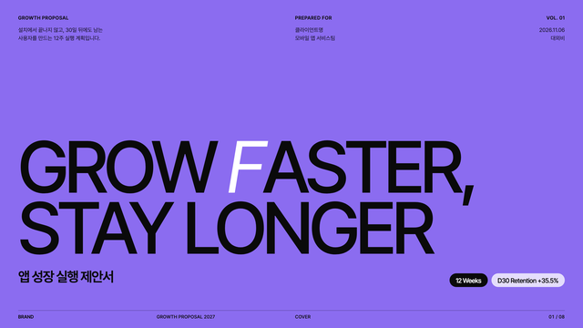
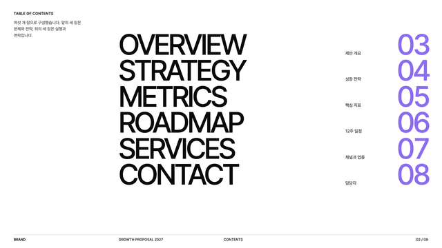
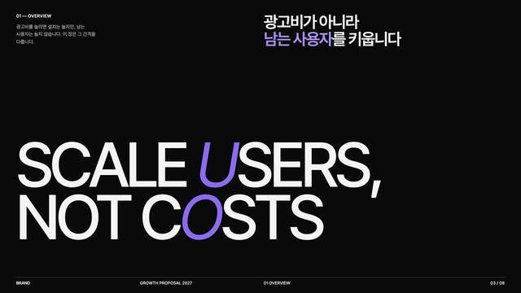
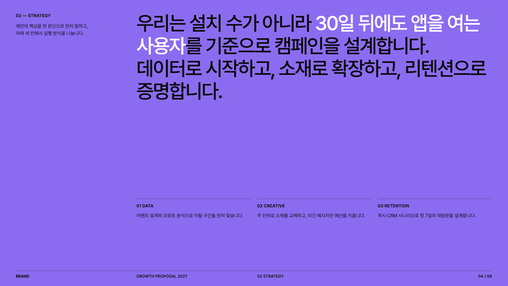
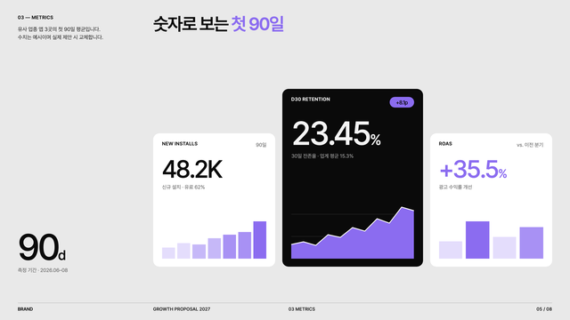
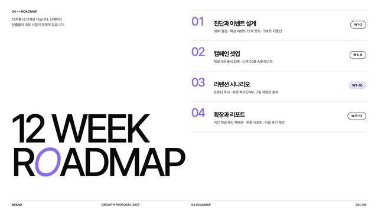
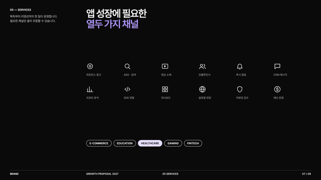
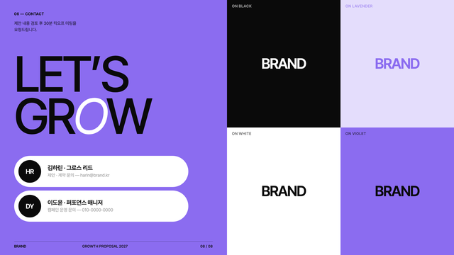

바이올렛 · 화이트 · 블랙 세 가지 색과 12열 그리드로 만드는 에디토리얼 브랜드북 스타일.
Deck 1280×720
Doc 900px
v1.0
2026.11.06
페이지 전체를 한 색으로 칠한다. 바이올렛 · 화이트/그레이 · 블랙을 장마다 돌려 쓰고, 틴트는 차트와 칩에만.
막대 · 영역 차트 · 칩 배경 전용. 페이지 배경으로 쓰는 틴트는 없다.
Suisse Intl 대신 무료 서체 Inter Tight를 쓴다. 한글은 Pretendard. 대문자 · 음수 자간 · 행간 0.86.
ABCDEFGHIJKLMNOPQRSTUVWXYZ
abcdefghijklmnopqrstuvwxyz 0123456789 %+→
페이지는 각지고, 페이지 위에 얹는 작은 오브젝트만 라운드 14 또는 캡슐.
즉흥 레이아웃 대신 여덟 가지 아키타입을 복제해 내용만 바꾼다.








렌더한 PNG를 직접 보고 넘침 · 겹침 · 줄바꿈을 검수한다.